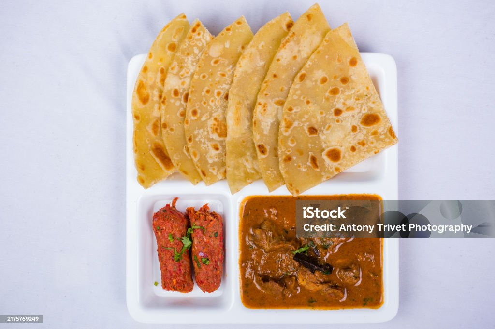

Chapati
Home

Description
Chapati is a soft, unleavened flatbread that is a staple in East African and South Asian cuisine.
Ingredients
- 2 cups whole wheat flour
- 3/4 cup warm water
- 1 teaspoon salt
- 1 tablesoon oil or ghee
- extra flour for rolling
Steps
- Mix 2 cups flour and salt together in a bowl.
Slowly mix in enough water to make a thick dough. Mix in oil until combined.
- Knead dough on a cool surface for a few minutes, adding a few spoonfuls of flour.
Return dough to the bowl, cover with a clean cloth, and let rest for 30 minutes.
- Divide the dough into equal small balls.
Lightly flour a surface and roll each dough ball into a thin, round shape of about 6-8 inches.
- Heat a tawa flat pan or non-stick pan over medium heat.
Place a rolled chapati on the hot pan and cook for about 30 seconds or until bubbles form.
Flip it and cook for another 30 seconds.
Flips again and press lightly with a spatula to help it puff up. Cook until golden brown spots appear.
- Remove from heat and brush with ghee.
Serve warm with curries, vegetables, or tea.